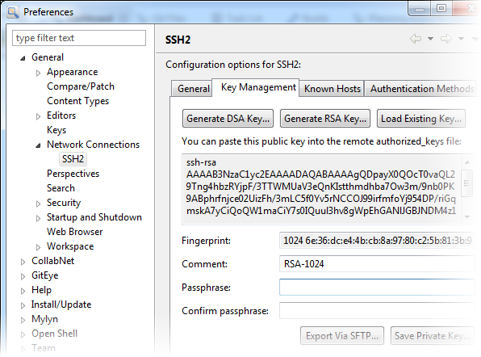

It is common to access Git repositories using SSH keys.
-
In GitEye's
Dashboard, click SSH
Settings.
The General tab displays your SSH home location.
If you've already been using openSSH, the SSH keys will be picked up from
this location.
-
To generate a new SSH key, click the Key Management
tab.
You are presented with different options to generate
keys.
-
Click Generate RSA Key.
The SSH key pair is generated.

-
Add a passphrase to protect the key.
-
Click Save Private Key and accept the folder where you
want it saved.
-
Click Apply.
You can now paste the public key into your remote authorized_keys file. If
you are working with TeamForge, here's
what you need to do:
-
Log into your TeamForge site.
-
On your My Workspace screen, click My
Settings in your personal navigation bar.
-
On your User Details page, click
Authorization Keys.
-
On the Authorization Keys page, copy the public key from
GitEye and paste it into the
Authorized Keys field.
-
Click Update.
When you log into a Git repository on your TeamForge site, SSH automatically checks your
private key against this public key and authenticates you.